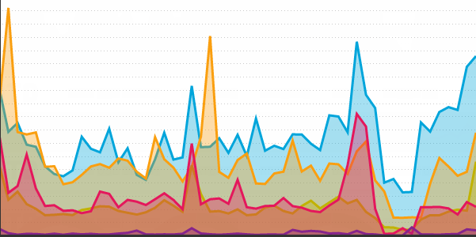

Francesca Smith
Welcome!
Your visitors
Your profile - add tooltips!
Francesca Smith's work explores the capabilities and juxtaposition of combining hard materials with soft textiles within a fashion jewellery context.
She explores a variety of materials from woods to fabrics, to metals to plastics. Exploring the possibilities of applying alternative materials to a fashion jewellery context.
Francesca Smith's BA graduate collection:
"I have always been fascinated by modern social attitudes towards remembering the dead and how people deal with the loss of a loved one. By looking at the extravagant rituals and customs of the Victorian era and the funerary practices of its people, my intent was to produce a collection, which confronts people with the idea of positive remembrance. By exploring the designs of Victorian jewellery and cemetery art, I sort to recreate classic designs using modern technologies. This contrast reflects the concept of current attitudes towards death compared to that of the Victorians. Using 3D design software and the process of rapid prototyping, I created nylon components embodying elements of Victorian mourning design. I chose to combine these elements with human hair and fabric to create a material juxtaposition, which reflects my design style of using hard materials with soft textiles."
Modeled images:
- Photographed by Vicki King
- Hair and Make-up by Hayley Fell
- Modeled by Caroline Druitt
Your media
Latest jobs
Add jobs applied for, jobs saved, placements, badges for attending events and placements - friends confirm they attended?
...
...